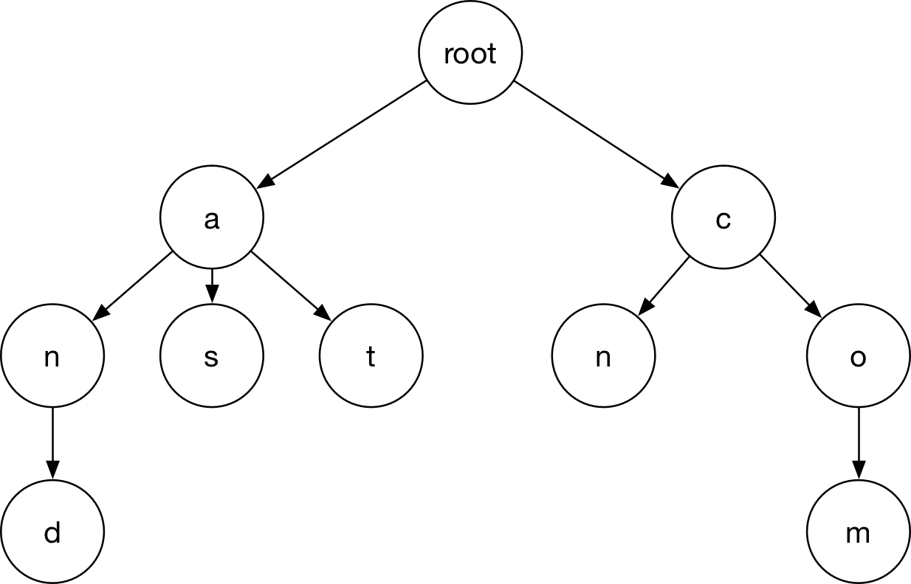
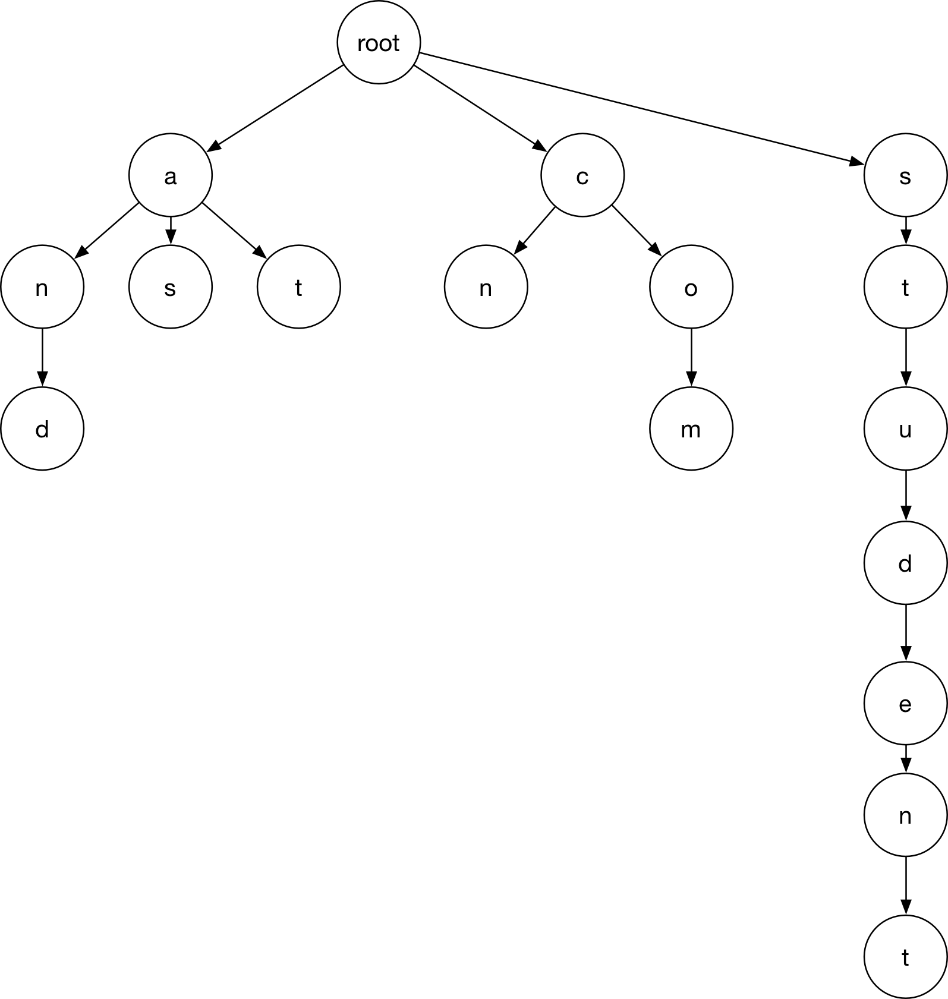
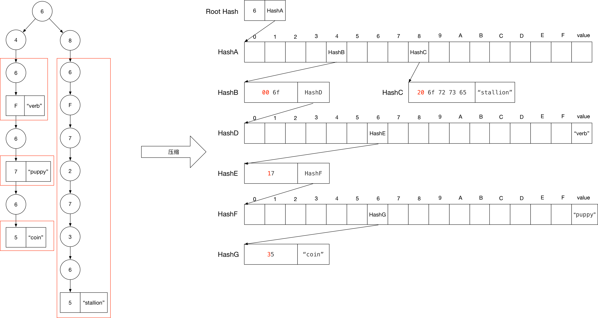

概述
Merkle Patricia Tree(简称MPT树，实际上是一种trie前缀树)是以太坊中的一种加密认证的数据结构，可以用来存储所有的(key，value)对。在以太坊区块链中的一个区块包含一个区块头部，一个交易列表和一个叔块（uncle block）列表。在区块头部中包含一个交易根哈希，它被用来验证那个交易列表。虽然交易是通过对等方式作为简单列表发送的，但是它们会被组合成一个称为trie的特殊数据结构来计算根哈希。它可以用来验证区块，也可以作为一个通过key获取value的一个数据结构。这意味着交易列表在本地是以trie的形式存储的，另外当客户端请求区块链的时候会将其序列化为列表发送。而客户端在收到列表后将交易列表重新构造成trie的形式以此来验证根哈希。值得注意的是，以太坊使用RLP（recursive length prefix encoding）编码了trie中的所有条目。
trie也被称作radix tree，以太坊对其做了一些改进以提高效率。在一个普通的radix tree中，一个key其实代表了为获取key对应的value所需的树的访问路径。具体来说，就是从树根开始，key中的每个字符就代表了下个要访问的子节点，遍历完整个key将会得到对应的value。假设限定一个key的取值范围为一个包含N个字符的字符表，那么这意味着树中每个节点最多有N个孩子节点，而树的最大深度对应key的最大长度。
Radix tree非常棒，因为对于那些有相同前缀的key在树中将会存储的很接近。并且也不会像散列表一样出现key的碰撞。

但是对于一个和其他节点没有公共前缀的长key而言，为了得到它相应的value你必须遍历（存储）相当多的节点，并且在整个遍历路径中没有存储其他的value。可以看到下图这棵树非常的不平衡。

基础的Radix Tries
对于radix tries的更新和删除函数非常简单，可以大致被定义为如下
1 | ''' |
可以看到，通过这种形式的数据结构，可以实现：
为了让树加密安全。每个节点通过哈希来引用而非一般C语言实现中的32位或64位指针，访问的时候根据哈希去leveldb数据库查询。通过这种模式，树的根哈希将成为整个数据结构密码学上的指纹（类似，Merkle）。
如果一棵trie的树根是公开的，那么任何人可以通过提供一对(key, value)来证明其是确实在trie中存在的，而不能伪造。
上面所述的实现，每次访问的都是访问path中一个nibble即以4个bit，1个十六进制的字符为步长，所以大多数节点都是一个长度为17的数组，这些数组被称为分支节点。
Merkle Patricia Trie
基本的radix tries有一个主要的局限：低效。
比如你想要存放一对（key, value），而其中的key长度为64个字符（以etherem state trie为例，64指的是byte32中nibble的数目），所以你将需要超过1KB（64×16=1024）的额外空间去为每个字符存储一层节点，并且每个查找或者删除操作都将会需要64步，而即将介绍的The Patricia trie将会解决这个问题。
优化
Merkle Patricia tries通过增加整个数据结构的复杂性来解决低效问题：
Merkle Patricia tries中的节点可能是以下类型之一
空白节点 NULL：即空节点。叶节点 leaf：一个保存着两个元素的节点[ encodedPath, value ]。拓展节点 extension：一个保存着两个元素的节点[ encodedPath, key ]。分支节点 branch：长度为17的数组，前16个节点对应了16个可能16进制值，最后一个元素存放的 是key终止于该节点的值[ v0 ... v15, vt ]
对于一个64位长的字符路径，在遍历途中不可避免的会遇到这样一种情况：遇到某一层只有一个分支。要求这种层除了要访问的索引外，其他索引位置均存放空值是很浪费的。所以我们通过设置[ encodedPath, key ]形式的拓展节点来加速访问的过程，其中encodedPath包含了部分被跳过的路径（使用的压缩方法下面会介绍），而key用来去数据库中查找下一层节点。
对于一个叶子节点（ [ encodedPath, value ]）来说，可以使用encodedPath中第一个nibble中的标识位来指示。在这种情况下，value即为最终要查询的值。
然而，上述的优化带来了一些歧义。
在以nibble为步长来遍历路径的时候，我们可能最终遍历奇数次，但是因为所有的数据都以字节格式存储，所以encodedPath中存放的nibble必定为偶数，而如果被压缩的路径为奇数的话就需要填充长度。比如，对于nibble <01>你很难很难区分开来究竟跳过的路径是<0>还是<01>，因为它们俩实际存储都为nibble <01>。所以为了指定奇数长度，需要在路径前面加上一个标志位。
使用可选终止符的十六进制序列的紧凑编码
标识后面路径长度的奇偶性的标志位以及标识叶子节点还是拓展节点的标志位均在encodedPath的第一个nibble中，一共有如下几种可能：
1 | hex char bits | node type partial path length |
对于偶数剩余长度（即hex char为0和2的情况）下，总会有另一个0作为填充nibble。
1 | def compact_encode(hexarray): |
一些示例
1 | [ 1, 2, 3, 4, 5, hash] ---> 奇数长度拓展节点 |
下面是获取一个Merkle Patricia trie节点的拓展代码
1 | def get_helper(node,path): |
实例
假设我们现在希望一个包含四个path/value对的trie：('do', 'verb'), ('dog', 'puppy'), ('doge', 'coin'), ('horse', 'stallion')。
首先，我们先将path转换成以nibble形式表示
1 | <0x64 0x6f> : 'verb' |
现在，我们在底层数据库存储一下key/value对来构建这样一个trie结构
1 | rootHash: [ <6>, hashA ] |

总结
与普通的radix trie相比，MPT树能够有效的减少树的深度，增加trie的平衡性。而且通过哈希值来进行节点的链接有助于提高树的安全性和可验证性。
在以太坊中的Tries
在以太坊中所有的merkle tries都是使用的Merkle Patricia Trie。
在区块头部保存有三个根分别对应于三个trie：
- stateRoot
- transactionRoot
- recepitsRoot
State Trie
存在一个全局的state trie并且持续更新。在其中，path始终是sha(ethereumAddress)而value总是rlp(ethereumAccount)。具体的，一个ethereumAccount是一个包含4个元素的数组：[nonce, balance, storageRoot, codeHash]，值得注意的是这里storageRoot是另一棵patricia trie的根。
Storage Trie
Storage trie是所有合约地址存放的地方。每个账户有一个单独的storage trie。而在其中的path有点复杂但是他们依赖于这个。
Transaction Trie
每个区块都单独有一棵transaction trie。在其中的path为rlp(transactionIndex)。其中transactionIndex是交易在这个去区块中的索引，其顺序主要由矿工决定，所以这个数据直到挖矿之后才能知道。当一个区块被“挖”了以后，这棵transaction trie将再也不会改变。
Receipts Trie
每个去区块都有其自己的receipts trie。这里的path为rlp(transactionIndex)。其中transactionIndex是交易在这个去区块中的索引。永远不会更改。
参考文献
https://easythereentropy.wordpress.com/2014/06/04/understanding-the-ethereum-trie/